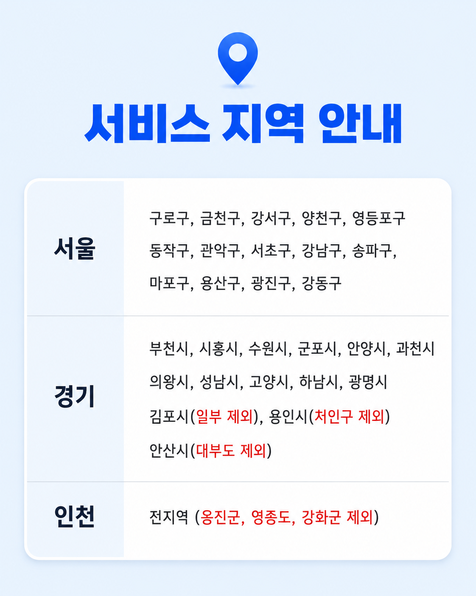

서울 주요 지역
저희 일등밧데리는 구로구, 금천구, 강서구, 양천구, 영등포구, 동작구, 관악구, 서초구, 강남구, 송파구, 마포구, 용산구, 광진구, 강동구에서 자동차배터리 출장교체 서비스를 제공합니다.
Service Area
저희 일등밧데리는 서울·경기·인천의 공식 서비스지역에서 자동차배터리 출장교체 서비스를 제공합니다. 차량이 있는 위치로 방문해 차종과 배터리 규격을 확인하고 교체합니다. 방문 시간은 당일 기사 배차와 교통 상황을 확인해 안내합니다.
Guide
이미지에서 주요 서비스 지역을 확인하실 수 있습니다.

Coverage
저희 일등밧데리는 구로구, 금천구, 강서구, 양천구, 영등포구, 동작구, 관악구, 서초구, 강남구, 송파구, 마포구, 용산구, 광진구, 강동구에서 자동차배터리 출장교체 서비스를 제공합니다.
저희 일등밧데리는 부천, 시흥, 수원, 군포, 안양, 과천, 의왕, 성남, 고양, 하남, 광명, 김포, 용인, 안산의 공식 서비스지역에서 자동차배터리 출장교체 서비스를 제공합니다. 용인시는 기흥구·수지구를 서비스하며 처인구는 제외합니다.
저희 일등밧데리는 인천 연수구, 서해구, 남동구, 부평구, 미추홀구, 계양구, 검단구에서 자동차배터리 출장교체 서비스를 제공합니다. 옹진군, 영종도, 강화군 등 별도 안내가 필요한 지역은 1644-9141로 문의해 주세요.
Contact
차량 위치와 차종을 알려주시면 방문 시간과 추천 배터리를 안내해드립니다.